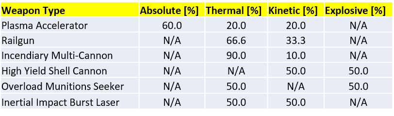
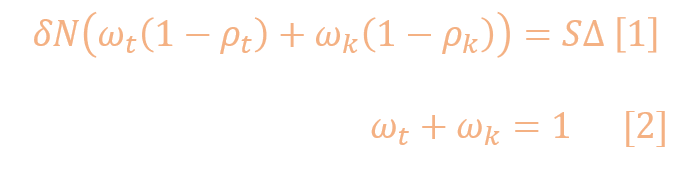
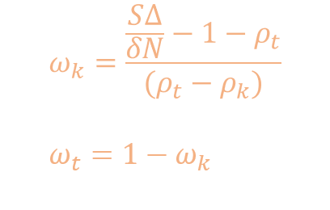
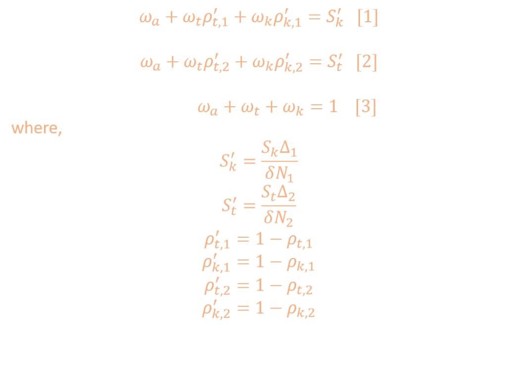
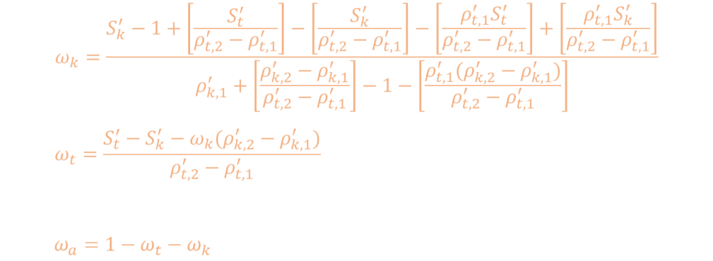
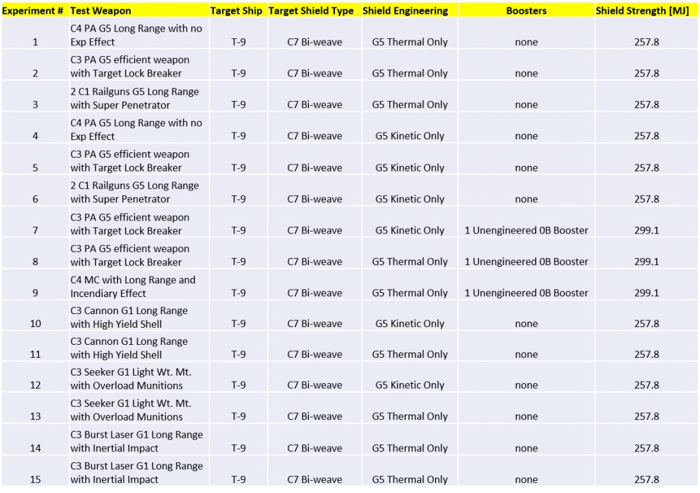
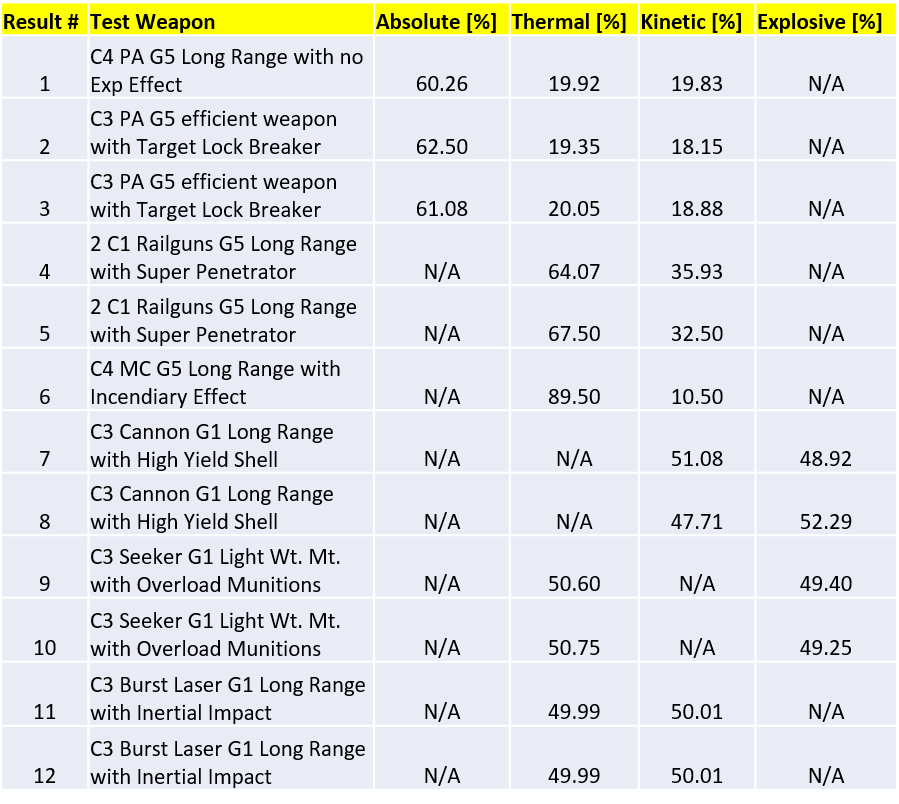

The partition of the different types of damage (i.e. thermal, kinetic, absolute) has been determined for Railguns, Incendiary Multi-Cannons, High Yield Shell Cannons, Overload Munitions Seeker Missiles, Inertial Impact Burst Lasers, and Plasma Accelerators. The results are summarized in the table below.

The community has long suspected that Railguns have a damage partition of roughly 60% thermal and 40% kinetic, with different institutions within the Pilot’s Federation quoting different numbers in that ballpark [1]. In the case of Plasma Accelerators, the community has had good reason to think that the damage partition is 60% absolute, 20% thermal, and 20% kinetic. Weapons that have been modified to include the Incendiary Rounds experimental effect presumably convert “a large portion to thermal damage”, with no clear number given.
In this analysis we definitively put the these questions to rest by bringing mathematical rigour and careful experimentation. We have found that the damage partition of Railguns is 2/3 thermal and 1/3 kinetic; Plasma Accelerators are indeed 60% absolute, 20% thermal, and 20% kinetic; Incendiary weapons convert 90% of the damage to thermal and the remaining 10% stays as kinetic; High Yield Shell weapons only convert 50% of the damage to explosive, with 50% of the damage staying as kinetic; Overload Munitions weapons also split the damage evenly between thermal and explosive; and Inertial Impact weapons split the damage evenly between thermal and kinetic.
These results will inform other studies conducted by Canonn, such as the accurate measurement of the strength of Thargoid Interceptor shields, where a number of slightly inaccurate assumptions have been made about the damage partitioning of these weapons.
We will begin by addressing the case of weapons with two damage components, such as Railguns and weapons modified with the Incendiary experimental effect, namely Incendiary Multi-Cannons. Since we have two damage components, we have two unknowns that we’re after, which is aptly described by a system of two linear equations:

where δ is the weapon’s full damage, N is the number of shots/volleys fired, ω_t is the thermal component of the weapon damage, ω_k is the kinetic component, ρ_k is the target shield’s kinetic resistance, ρ_t is the target shield’s thermal resistance, S is the target shield maximum strength, and Δ is the fraction of the full strength lost after N shots are fired. The second equation simply states that the fractional components add up to unity, which is an important constraint that must be followed. Solving the pair of equations is straightforward. The solution is given by

The solutions as above can be used for any two-component weapon (i.e. thermal and kinetic, kinetic and explosive, explosive and thermal, etc.). Now, for weapons with three damage components, such as Plasma Accelerators, we have a system of 3 linear equations with three unknowns. Equations [1] and [3] below are analogous to the two-component equations. A second shield type was used in equation [2] to ensure orthogonality.

where S_k is the full strength of a target shield that has been fully engineered for kinetic resistance, S_t is a similar quantity for a shield fully engineered with thermal resistance, N_1 is the number of shots fired at the kinetically-resistant shield, and N_2 is the number of shots fired at the thermally-resistant shield. The other variables are the same as those of two-component weapons. It should be noted that, as pointed out in equation [3], the three components of the weapon must add up to unity.
Solving this system of linear equations was done as follows: 1) plug [3] into [1] and [2], 2) subtract equation [2] from [1], 3) isolate one variable, 4) plug that solution into previous equations to obtain the solution to the other two unknowns. The solution is shown below:

Most of the parameters in the equations above are known, such as shield strengths and resistances. The parameters that need to be measured in the field are number of shots fired and the corresponding fractional shield loss.
Once a solid theoretical understanding was established, the next task was to measure the parameters used in the damage model equations, namely the number of shots required to bring the shield down by a specific amount. Five types of weapons were tested: 1) Railguns, 2) Plasma Accelerators, 3) an Incendiary Multi-Cannon, 4) High Yield Shell Cannons, 5) Overload Munitions Seeker Missiles, and 6) Inertial Impact Burst Lasers. Two or three trials were collected for each weapon type to ensure consistency of results. For each trial in a given experiment, these steps were followed:
It should be noted that in order to keep measurement errors to a minimum, a relatively weak target shield was employed. Any given shield strength measurement will have an inherent error of 1%, so a weak shield means a lower absolute error. Additionally, it was sometimes desired to bring the shield down as close to 0% as possible to keep errors associated with a small fractional number to a minimum. In order to do that, the shield was slightly strengthened while keeping overall resistances the same by simply equipping the target with a single 0B shield booster.
During the course of the experimental phase of this analysis, it was noticed that the shield percentage provided by the target’s “bottom panel” was often off by 1% relative to that of the shooter’s “left panel” result. Additionally, there were instances where the bottom panel would stop at 99% when recovering. It became clear that the two panels use different rounding functions and that the bottom panel was less reliable. Calculations were therefore carried out with the results recorded from the shooter’s left panel.
Despite the issues with the target’s bottom panel, the results were otherwise perfectly consistent from one trial to the next, thereby ensuring no random components existed in the measurements.
In total, 15 experiments were conducted, six of which were added to this analysis at the request of the community (cannons, missiles, and burst lasers). The experimental parameters are listed in the table below. The target ship consisted of a T-9 that served well as a large, broad target.

The aggregated experimental results are tabulated below. The first result is the product of the parameters extracted from experiments 1 and 4. The damage partition numbers have some noise to them, but the result clearly points to a 60/20/20 solution for Plasma Accelerators. Result number 2 for the C3 PA is the product of experiments 2 and 5, which show noisier solutions but still consistent with the result for the C4 PA. Experiments 7 and 8 were conducted in an attempt to get more accurate numbers for the C3 PA, with limited improvement, but nevertheless consistent with those of the C4 PA.

Results number 4 and 5 capture the damage partition measurements for Railguns; the former against a shield engineered for thermal resistance, and the latter against a kinetic resistant shield. The results are a bit wobbly, but they clearly indicate a 66.6/33.3 thermal/kinetic damage partition.
Result number 6 corresponds to a Multi-Cannon with the Incendiary experimental effect. The measurements indicate that 90% of the damage is thermal and the rest is kinetic. So, when the Pilot’s Federation says “converting a large portion to thermal damage”, they mean 90%. It can be safely assumed that other weapons modified with the Incendiary experimental effect have the same damage partition. It should be noted that, initially, the results for the Multi-Cannon were nonsensical. The problem was eventually traced to the fact that with each C4 MC shot two bullets are fired simultaneously, so the damage per shot parameter given by the outfitting computer is off by a factor of 2. Additionally, the 3.5 damage per bullet is closer to 3.43.
Results 7 and 8 correspond to a High Yield Shell Cannon and results 9 and 10 correspond to Seeker Missiles with Overload Munitions. The same two-component equations that were used to analyze Railguns and Incendiary Multi-Cannons were used for these two other weapons. In the case of High Yield Shell Cannons, the experimental effect seems to convert 50% of the damage to explosive, while leaving the rest as kinetic. Seeker Missiles that have the Overload Munitions experimental effect also seem to split the damage evenly between thermal and explosive. The results for the Cannon are more wobbly than usual because the high resistances to both types of damage makes measurements less certain.
Results 11 and 12 correspond to Burst Lasers with the Inertial Impact experimental effect. The two-component model was used to infer the damage partitions for these kinds of weapons. The results clearly indicate that 50% of the damage is converted to kinetic, which (miraculously), matches the damage partition indicated in the outfitting screen.
Something else to note is that, with the exception of the certain experimental effects that specifically change the weapon’s damage composition, other experimental effects such as Target lock Breaker have no impact on a weapon’s damage partition.
We have carried out an analysis of the damage partitions in Plasma Accelerators, Railguns, and Incendiary Multi-Cannons. The foundation of this analysis was a rigorous mathematical treatment of the problem. Careful experiments were conducted to extract the parameters needed for our damage model equations. We can definitively say that
The results from this analysis will inform a second look at the detailed measurement of Thargoid Interceptor shield strength.
This study was funded in part by the Canonn Interstellar Research Group and the Xeno Investigation division of the Anti-Xeno Initiative.
We would like to thank CMDR Joulupunikki for participating in this study. In addition to piloting the target vessel, he provided the engineered shields for this analysis as well as peripheral hardware. We would also like to thank CMDR 100.RUB for providing guidance, words of wisdom, and becoming a strong advocate for transparency in weapon documentation for the benefit of the galactic community.